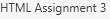
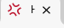

| Tag | Definition | Example(s) if aplicable |
|---|---|---|
| <!DOCTYPE html> | It specifies the specific HTML version used, and ensured that browsers render the page correctly. It is also outside of the <hml>tag. | No examples |
| <html lang="en"> </html> |
It is the container for all other HTML elements. | This page, aswell as the previous one, has been set to "en" for english. This tsg helps websites such as Google Translate know the default language for this page. |
| <meta charset="UTF-8"> | charset=character set, charset defines the character encoding for the HTML document. UTF-8 is a character set that covers almost all characters and symbols in the world. | No examples |
| <meta http-equiv="refresh" content="0; url=$URL"> | The http-equiv="refresh" tells the web page to refresh after a specific amount of seconds. The content="0; url$URL", the number controls the amount of seconds it will wait before refreshing, and the url is the where the page will be redirected to after the specific amount of seconds. |
No examples |
| <title>...</title> | It makes the title on the page tab |  |
| <style>...</style> | Section that describes the internal CSS of the page | This cell's background was made blue through <style>/internal CSS |
| <link rel="stylesheet" href="style.css"> | Points to an external CSS file | This page and the previous one point to a common style.css file that controls the look of these pages. |
| <link rel="icon" type="image/x-icon" href="favicon.ico"> | Adds a favicon |  |